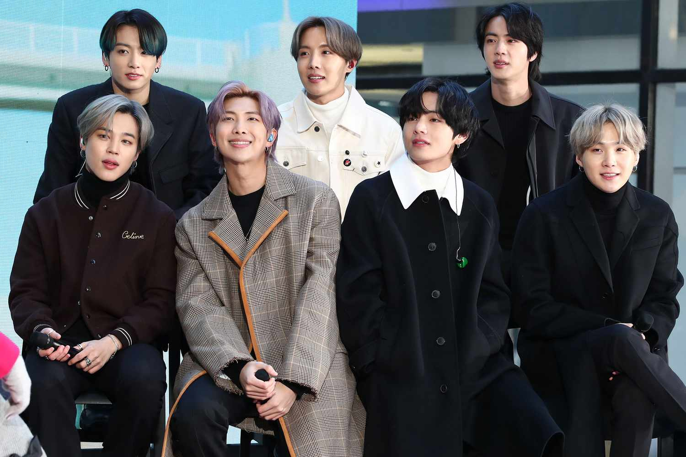
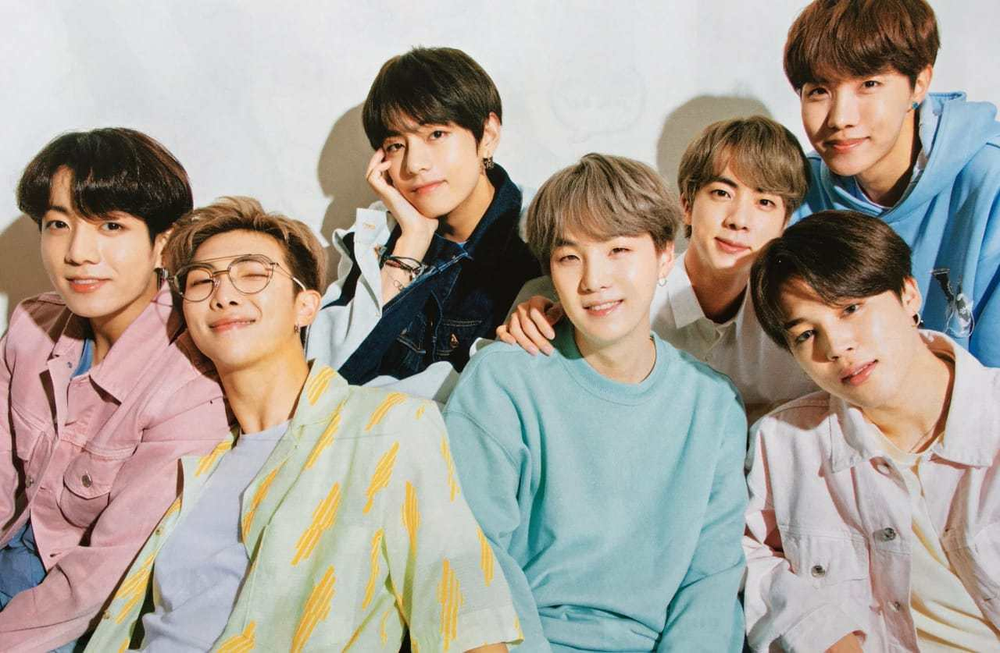

Um grupo masculino de K-pop formado na Coreia do Sul

Em 2010, a agência pequena e de orçamento comprometido Big Hit Music estava buscando jovens para participar de um grupo masculino de hip-hop. O BTS começou sua formação em 2010 depois que o CEO da Big Hit Music, Bang Si-hyuk, se encontrou com o líder do grupo RM e ficou impressionado com seu rap.O BTS era originalmente um grupo de hip-hop semelhante ao 1TYM da YG Entertainment, mas entre a sua formação inicial e a sua estreia, Bang Si-hyuk decidiu que os jovens contemporâneos precisavam de "um herói que pudesse lhes dar um ombro para se apoiar, mesmo sem falar uma palavra".
O grupo deveria estrear em 2011 e aparecer em várias faixas de artistas como 2AM e Lee Seung-gi antes de sua estreia ser adiada e o grupo ser reorganizado em um grupo de ídolo mais tradicional. A formação foi então finalizada com Jin, Suga, J-Hope, RM, Jimin, V e Jungkook em 2012 . Seis meses antes da sua estreia, eles começaram a ganhar atenção por sua presença em vários sites de mídia social, bem como seus covers de música no YouTube e SoundCloud.
O nome do grupo, BTS, significa, em coreano, Bangtan Sonyeondan (coreano: 방탄소년단; Hanja: 防彈少年團), que significa literalmente "Escoteiros à prova de balas". De acordo com um dos membros, J-Hope, o nome 'Bangtan' que dizer "ser resistente a balas, então significa bloquear estereótipos, críticas e expectativas que visam adolescentes como balas, para preservar os valores e o ideal dos adolescentes de hoje".
Em 2022, o BTS tornou-se o artista que mais vendeu álbuns da história da Coreia do Sul, vendendo mais de 30 milhões de acordo o Circle Chart. O seu álbum de estúdio Map of the Soul: 7 (2020) é o álbum mais vendido de todos os tempos da Coreia do Sul. Eles são o primeiro ato não-anglófono e asiático a realizar concertos esgotados no Estádio de Wembley e no Rose Bowl (Love Yourself World Tour em 2019), e foram nomeados pela Federação Internacional da Indústria Fonográfica (IFPI) como o Artista Global do Ano em 2020 e 2021
O grupo foi destaque na capa internacional da revista Time como "Líderes da Próxima Geração" e foram apelidados de "Príncipes do Pop".
"Smooth like butter
Like a criminal undercover
Gon' pop like trouble
Breakin' into your heart like that
Cool shade stunner
Yeah, I owe it all to my mother
Hot like summer"
BTS- butter

Você pode conhecer mais sobre a banda clicando aqui